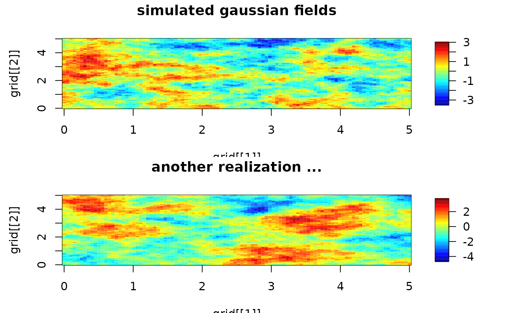

sim.rf.RdSimulates a stationary Gaussian random field on a regular grid with unit marginal variance. Makes use of the efficient algorithm based on the FFT know as circulant embedding.
sim.rf(obj)
circulantEmbedding(obj)
circulantEmbeddingSetup(grid, M = NULL, mKrigObject = NULL,
cov.function = "stationary.cov", cov.args = NULL, delta = NULL, ...)A list (aka covariance object) that includes information about the covariance
function and the grid for evaluation. Usually this is created by a
setup call to Exp.image.cov, stationary.image.cov, matern.image.cov or
other related covariance functions for sim.rf (See details below.)
or to circulantEmbeddingSetup for circulantEmbedding
A list describing the regular grid. length(grid) is the dimension of the field
(1D 2D etc) and each component are the regular locations in that dimension.
A vector of dimensions to embed the field. Simulation will be exact if each M[i] is
larger than 2*length(grid). The default is to choose a power of 2 larger than this
minima bound.
A text string with the name of the stationary covariance function to use.
Default is stationary.cov and general function that takes advantage of some efficiency
in finding distances.
A list of arguments to include with the covariance function, Eg. aRange and smoothness for the Matern.
If NULL the spatial domain is artifically doubled in size in all dimensions to account for the periodic wrapping of the fft. If passed this is the amount to extend the domain and can be less than double if a compact covariance function is used.
Object from fitting surface using the mKrig or spatialProcess functions.
For convenience any other arguments to pass to the covariance function.
sim.rf: A matrix with the random field values.
circulantEmbedding: An array according to the grid values specified in the setup.
circulantEmbeddingetup: A list with components
"m" "grid" "dx" "M" "wght" "call"
With the information needed to simulate the field.
The functions circulantEmbedding and circulantEmbeddingSetup are more recent fields
functions, more easy to read, and recommended over sim.rf. sim.rf is limited to 2D fields
while circulantEmbedding can handle any number of dimensions and has some shortcuts to be efficient for the 2D case.
The simulated field has the marginal variance that is determined by
the covariance function for zero distance. Within fields the
exponential and matern set this equal to one ( e.g. Matern(0) ==1) so
that one simulates a random field with a marginal variance of one. For
stationary.cov the marginal variance is whatever Covariance(0) evaluates to and we
recommend that alternative covariance functions also be normalized so
that this is one.
Of course if one requires a Gaussian field with different marginal variance one can simply scale the result of this function. See the third example below.
Both sim.rf and circulantEmbedding
take an object that includes some preliminary
calculations and so is more efficient for simulating more than one
field from the same covariance.
The algorithm using an FFT known as circulant embedding, may not always work if the correlation range is large. Specifically the weight function obtained from the FFT of the covariance field will have some negative values. A simple fix is to increase the size of the domain so that the correlation scale becomes smaller relative to the extent of the domain. Increasing the size can be computationally expensive, however, and so this method has some limitations. But when it works it is an exact simulation of the random field.
For a stationary model the covariance object ( or list) for circulantEmbedding should have minmally, the components:
That is
names( obj)
should give
"m" "grid" "M" "wght"
where m is the number of grid points in each dimension, grid is a list
with components giving the grid points in each coordinate.
M is the size of the larger grid that is used for "embedding" and
simulation. Usually M = 2*m and results in an exact
simulation of the stationary Gaussian field. The default if M is not passed
is to find the smallest power of 2 greater than 2*m. wght is an array from
the FFT of the covariance function with dimensions M.
Keep in mind that for the final results only the array
that is within the indices 1: m[i] for each dimension i is retained.
This can give a much larger intermediate array, however, in the computation.
E.g. if m[1] = 100 and m[2]=200 by default then M[1] = 256
and M[2] = 512. A 256 X 512 array
is simluated with to get the 100 by 200 result.
The easiest way to create the
object for simulation is to use circulantEmbeddingSetup.
For the older function sim.rf one uses the image based covariance functions with setup=TRUE to create the list for simulation.
See the example below for this usage.
The classic reference for this algorithm is Wood, A.T.A. and Chan, G. (1994). Simulation of Stationary Gaussian Processes in [0,1]^d . Journal of Computational and Graphical Statistics, 3, 409-432. Micheal Stein and Tilman Gneiting have also made some additional contributions to the algortihms and theory.
#Simulate a Gaussian random field with an exponential covariance function,
#range parameter = 2.0 and the domain is [0,5]X [0,5] evaluating the
#field at a 100X100 grid.
grid<- list( x= seq( 0,5,,100), y= seq(0,5,,100))
obj<- circulantEmbeddingSetup( grid, Covariance="Exponential", aRange=.5)
set.seed( 223)
look<- circulantEmbedding( obj)
# Now simulate another ...
look2<- circulantEmbedding( obj)
# take a look at first two
set.panel(2,1)
#> plot window will lay out plots in a 2 by 1 matrix
image.plot( grid[[1]], grid[[2]], look)
title("simulated gaussian fields")
image.plot( grid[[1]], grid[[2]], look2)
title("another realization ...")

# Suppose one requires an exponential, range = 2
# but marginal variance = 10 ( sigma in fields notation)
look3<- sqrt( 10)*circulantEmbedding( obj)
if (FALSE) {
# an interesting 3D field
grid<- list( 1:40, 1:40, 1:16 )
obj<- circulantEmbeddingSetup( grid,
cov.args=list( Covariance="Matern", aRange=2, smoothness=1.0)
)
# NOTE: choice of aRange is close to giving a negative weight array
set.seed( 122)
look<- circulantEmbedding( obj )
# look at slices in the 3rd dimension
set.panel( 4,4)
zr<- range( look)
par( mar=c(1,1,0,0))
for( k in 1:16){
image( grid[[1]], grid[[2]], look[,,k], zlim= zr, col=tim.colors(256),
axes=FALSE, xlab="", ylab="")
}
}
# same as first example using the older sim.rf
grid<- list( x= seq( 0,10,length.out=100) , y= seq( 0,10,length.out=100) )
obj<-Exp.image.cov( grid=grid, aRange=.75, setup=TRUE)
set.seed( 223)
look<- sim.rf( obj)
# Now simulate another ...
look2<- sim.rf( obj)